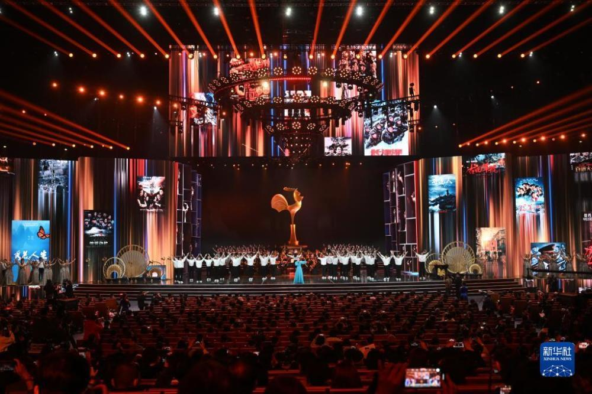

The 34th Golden Rooster Awards for Chinese Cinema were announced on the evening of 30 December
The 34th Chinese Film Golden Rooster Awards were announced on the evening of 30 December: The Island Guardians won Best Feature Film, Zhang Yimou won Best Director for Above the Cliff, Yu Xi, Huang Xin and Zhao Ningyu won Best Screenplay for 1921, Zhang Yi won Best Actor for Above the Cliff, Zhang Xiaofei won Best Actress for Hello, Li Huanying, Fan Wei won Best Supporting Actor for One Second, Zhu Yuanyuan Best Supporting Actress for My Sister, Best Directorial Debut for Drifting in the Wind, Best Small to Medium Budget Feature Film for Fish Under the Ice, Best Documentary/Science Education Film for After 90, Best Art Film for White Snake 2: The Green Snake Rises, Best Children's Film for Goodbye! Best Children's Film, Best Opera Film for South Vietnam, Best Foreign Language Film for Father Stuck in Time, Best Cinematography for Zhao Xiaoding for Above the Cliff, Best Music for Chen Guangrong and Chen Yongjian for Chinese Doctor, Best Art for Huo Tingxiao for The Revolutionary, Best Editing for The Hurt Locker 2, Best Sound Recording for Tao Jing for One Second and I and My Hometown" won the Special Jury Prize, and Lv Qiming, Zhang Xinyan and Li Qiankuan were honoured as Lifetime Achievement Film Artists by the China Federation of Literary and Art Circles.
The 2021 China Golden Rooster and Hundred Flowers Film Festival and the 34th Golden Rooster Awards for Chinese Cinema was held in Xiamen, Fujian from 28 to 30 December, during which 30 major activities were carried out in seven categories. As one of the key events of the Golden Rooster Festival, the Golden Rooster Opening Forum, with the theme of "A Tribute to 100 Years of Light and Film from History to the Future", was successfully held on 29 December. Zhang Hong, member of the Party Group of the China Federation of Literary and Art Circles and Secretary of the China Film Association, attended the event and delivered a speech. The Golden Rooster Opening Forum consisted of a keynote speech, a report release and a roundtable forum. During the festival, four film festivals were held, including the Golden Rooster International Film Festival, the Hong Kong, Macao and Taiwan Film Festival, the New Domestic Film Festival and the Ba Min Film Festival, as well as the 2021 Golden Rooster Film Venture Conference and the "New Era of 5G Digital Intelligence - Forum on Film Innovation and Development in the Context of the Metaverse" "Huawei New Image-Golden Rooster Mobile Film Project: Popular Creation and the Vitality of Mobile Film", "Actors' Forum: The Glory and Dream of Performing Arts" and other Golden Rooster series of forums, as well as activities such as the Film Industry Study Symposium and the grassroots level of film artists and screening teams The film industry's learning symposiums, film artists and projection teams went to the grassroots.